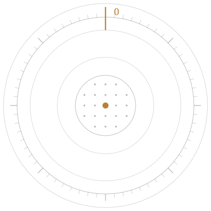
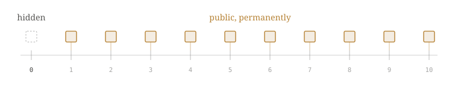

Cross-chain key exposure
Your address is not your public key.
It is a hash of one — and a quantum computer cannot attack a fingerprint. It needs the real key, which becomes public the first time your account signs anything, on any chain.
In Ethereum the nonce counts what an account has sent. Nonce 0 means nothing has leaked. Anything above zero means the key is out there — including the testnet a developer used two years ago.
npx nonce0 scan . · zero dependencies · no account


Algorithm inventory
Under a cryptographically relevant quantum computer. Hashes survive Grover at halved strength; discrete-log does not survive Shor at all.

The exposure
Every signature you have ever broadcast is already archived.
A chain is a permanent, public transcript. Elliptic-curve keys that are safe today are recorded forever, and the day a cryptographically relevant quantum computer arrives, that transcript becomes a key-recovery dataset. Harvest now, decrypt later is not a hypothetical for a ledger — it is the default.
2030
NIST deprecates 112-bit classical strength — the curve under most of web3 today.
2035
Classical signatures disallowed outright. Immutable contracts do not get an upgrade window.
∞
Retention window of a public ledger. Nothing broadcast can be un-broadcast.

The stack
nonce0's full stack for post-quantum protocols
Applications
Wallets · bridges · custody · RWA issuers
Protocol adapters
EVM · SVM · Move · Cosmos SDK · CometBFT
PQ cryptographic core
ML-DSA signing · ML-KEM encapsulation · hash-based fallback
Attestation ledger
Public proof that a key, contract or validator set is quantum-safe
Threshold key custody
Distributed lattice keys, no single point of compromise

Three properties that make the migration survivable.
Four pieces. Adopt them in any order.
Integration guide →01 — Verify
nonce0 Verifier
Gas-audited ML-DSA and SLH-DSA verification contracts. One call site, no protocol fork, hybrid mode while you migrate.
≈ 190k gas / verification
02 — Sign
nonce0 Keys
Lattice key generation and threshold signing for treasuries, bridge committees and validator sets. HSM and MPC backed.
t-of-n · 2-of-3 to 15-of-21
03 — Attest
nonce0 Attest
A public registry of quantum-safe posture. Prove to auditors, insurers and users which of your keys have migrated — and when.
On-chain, permissionless reads
04 — Assess
nonce0 Scan
Point it at a deployment and get an inventory of every exposed curve, upgrade path and unowned admin key, ranked by exposure.
Free for public contracts
Migration path
A protocol does not stop to change its cryptography.
STEP 01
Inventory
Scan discovers every signing surface: EOAs, multisigs, upgrade admins, bridge relayers, off-chain signers.
STEP 02
Run hybrid
Accept classical and lattice signatures side by side. Nothing breaks for existing users while the new path proves itself.
STEP 03
Rotate
Move custody to threshold lattice keys, retire the exposed curve, publish the rotation to Attest.
STEP 04
Enforce
Flip the verifier to PQ-only, with a monitored fallback window and alerting on any classical attempt.
Developers
Two lines in your verifier. That is the integration.
Audited libraries for Solidity, Rust and Move, plus a TypeScript client for signing off-chain. Deterministic test vectors from the FIPS specs ship with every release, so your CI proves conformance rather than assuming it.
"The migration is not a cryptography problem any more. The primitives are standardised. What is left is inventory, sequencing and proof — and that is an engineering schedule."
From the nonce0 protocol paper
3
Independent audits of the verifier suite
Reports published in full
100%
FIPS 204 test-vector coverage in CI
Conformance proven, not assumed
0
Protocol forks required to adopt
Hybrid path from day one
MIT
Licensed, with reproducible builds
Verify the artifact you deploy
Testnet is open
{kind=link}
{kind=link}
_installation.jpg){kind=link}